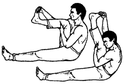

<- back
Взмах хвостом змеи вверх

Исходное положение: Левая нога вытянута вперед, правая согнута в колене, как в предыдущем упражнении. Правой рукой обхватываем сверху носок правой ноги, левая рука лежит на правом бедре под коленным сгибом.
На выдохе разгибаем правую ногу в колене вверх, притягивая носок к себе и отжимая пятку от себя. При этом левой рукой прижимаем правое бедро к груди. На вдохе правая голень опускается.
Выполняя упражнение, стремитесь полностью распрямить правую ногу и сконцентрировать внимание на пятке.
Next up: Сжатое кольцо.